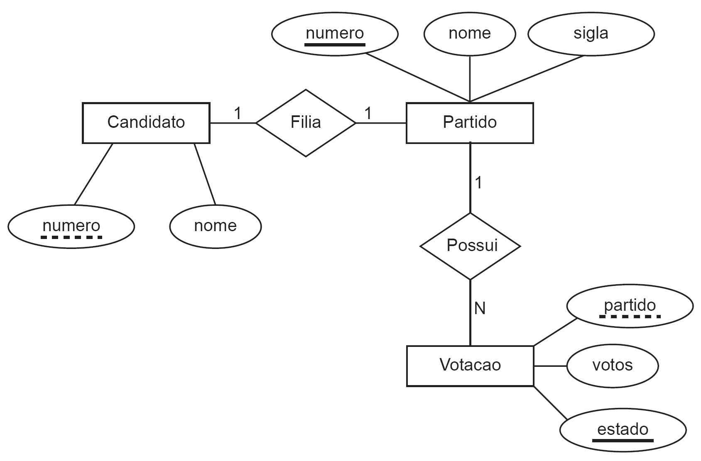

Capítulo 2 REVISÃO TEMAS ESPECÍFICOS ADS: BANCO DE DADOS
2.1 Questão 3

Um cliente solicitou a uma empresa a criação de um banco de dados para armazenar o resultado de uma eleição presidencial, com dados sobre os partidos políticos, os candidatos e a votação obtida por cada candidato em cada unidade da federação.
As tabelas a seguir contêm os dados registrados a partir do resultado dessa eleição.
2.1.1 🧾 Tabela: Partido
| Número | Nome | Sigla |
|---|---|---|
| 91 | Partido 1 | P1 |
| 92 | Partido 2 | P2 |
| 93 | Partido 3 | P3 |
| 94 | Partido 4 | P4 |
| 95 | Partido 5 | P5 |
2.1.2 🧾 Tabela: Candidato
| Número | Nome |
|---|---|
| 91 | Candidato 1 |
| 92 | Candidato 2 |
| 93 | Candidato 3 |
| 94 | Candidato 4 |
| 95 | Candidato 5 |
2.1.3 🧾 Tabela: Votação
| Partido | Votos | Estado |
|---|---|---|
| 91 | 12345 | AC |
| 91 | 98323 | PE |
| 91 | 1726453 | SP |
| 92 | 98463 | AC |
| 92 | 192837 | PE |
| 92 | 4283747 | SP |
| 93 | 16253 | AC |
| 93 | 293845 | PE |
| 93 | 6253745 | SP |
| 94 | 98372 | AC |
| 94 | 598333 | PE |
| 94 | 8271347 | SP |
| 95 | 46837 | AC |
| 95 | 327264 | PE |
| 95 | 5938374 | SP |
2.1.4 PERGUNTA-SE
Com base nas informações e na situação apresentada, qual o comando SQL que seleciona corretamente os nomes dos candidatos, seus partidos e o total de votos de cada partido nessa eleição?
2.1.5 Alternativas
SELECT c.nome, p.nome, SUM(v.votos)
FROM Partido p, Candidato c, Votacao v
WHERE c.numero = p.numero AND v.partido = c.numero;SELECT c.nome, p.nome, COUNT(v.votos)
FROM Partido p, Candidato c, Votacao v
WHERE c.numero = p.numero AND v.partido = c.numero
GROUP BY c.nome, p.nome;SELECT c.nome, p.nome, SUM(v.votos)
FROM Partido p, Candidato c, Votacao v
WHERE c.numero = p.numero AND v.partido = c.numero
GROUP BY c.nome, p.nome;SELECT c.nome, p.nome, v.votos
FROM Partido p, Candidato c, Votacao v
WHERE c.numero = p.numero AND v.partido = c.numero
GROUP BY c.nome, p.nome, SUM(v.votos);SELECT c.nome, p.nome, COUNT(v.votos)
FROM Partido p, Candidato c, Votacao v
WHERE c.numero = p.numero AND v.partido = c.numero
GROUP BY c.nome, p.nome, v.votos;2.2 Questão 4
Leia o texto a seguir:
JOÃO GRILO: - Isso é coisa de seca. Acaba nisso, essa fome: ninguém pode ter menino e haja cavalo no mundo. A comida é mais barata e é coisa que se pode vender. Mas seu cavalo, como foi?
CHICÓ: - Foi uma velha que me vendeu barato, porque ia se mudar, mas recomendou todo cuidado, porque o cavalo era bento. E só podia ser mesmo, porque cavalo bom como aquele eu nunca tinha visto.
(SUASSUNA, A. Auto da compadecida, 2000)
2.2.1 FAÇA UM DIAGRAMA ENTIDADE-RELACIONAMENTO BASEADO NESTAS INFORMAÇÕES E RESPONDA
A seguir apresenta-se um modelo de dados elaborado a partir do diálogo entre Chicó e João Grilo.
Com base no diálogo e no diagrama apresentados, avalie as afirmativas:
2.2.2 Afirmativas
I. O Chicó e a velha poderão ser cadastrados na entidade pessoa.
- O Chicó e a velha poderão ter mais que um cavalo cadastrado.
- O atributo rg da entidade pessoa pode ter a função de chave primária nessa entidade.
- O cavalo deverá ter no mínimo uma pessoa e uma pessoa poderá ser cadastrada sem a necessidade de ter um cavalo.